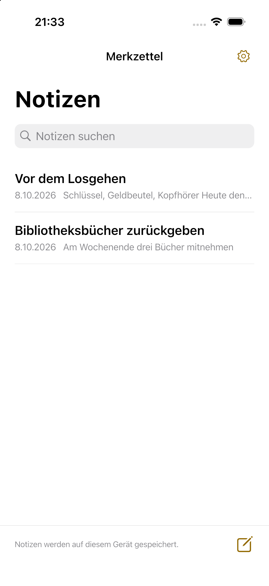

Wichtige Notizen auf dem Home-Bildschirm.
Ein schneller, einfacher Notizblock. Zeige nur die benötigten Notizen in gut lesbarer Schrift auf deinem Home-Bildschirm.
Anleitung anseheniPhone / Android · Bald verfügbar

Schreiben. Wählen. Im Blick behalten.
Öffne eine Notiz und schreibe. Änderungen werden automatisch gespeichert.
Tippe in einer Notiz auf Zum Home-Bildschirm und folge den Anweisungen des Geräts, um das Widget hinzuzufügen.
Tippe die Notiz an, um ihren Editor zu öffnen.
Einfach schreiben. Leicht lesen.
Drei Textgrößen
Normal, groß und sehr groß. Lange Notizen lassen sich durch Antippen vollständig lesen.
Notizen griffbereit
Ohne Konto. Notizen bleiben auf dem Gerät und sind nach dem Löschen 30 Tage wiederherstellbar.
Zehn Sprachen
Japanisch, Englisch, Koreanisch, vereinfachtes und traditionelles Chinesisch, Spanisch, Französisch, Deutsch, Italienisch und brasilianisches Portugiesisch.
Datenschutz
Text, Zeitangaben sowie Anzeige-, Lösch- und Spracheinstellungen werden auf dem Gerät gespeichert. Notiztexte gehen weder an Server noch an das Werbe-SDK; kein Analyse-SDK wird verwendet.
DatenschutzWerbung
Die kostenlose App sieht ein Banner unter der Notizliste vor. Editor und Widgets sind werbefrei. Notizen funktionieren auch, wenn Werbung nicht lädt.